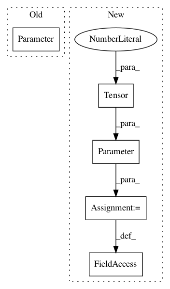

e60669c5aa467d5c11a508c01b37c4ed8e352fa6,torch_geometric/nn/conv/supergat_conv.py,SuperGATConv,__init__,#SuperGATConv#Any#Any#Any#Any#Any#Any#Any#Any#Any#Any#Any#Any#,107
Before Change
heads * out_channels))
if self.attention_type == "MX":
self.att = Parameter(torch.Tensor(1, heads, 2 * out_channels))
elif self.attention_type == "SD":
self.register_parameter("att", None)
else:
raise ValueError
After Change
heads * out_channels))
if self.attention_type == "MX":
self.att_l = Parameter(torch.Tensor(1, heads, out_channels))
self.att_r = Parameter(torch.Tensor(1, heads, out_channels))
else: // self.attention_type == "SD"
self.register_parameter("att_l", None)
self.register_parameter("att_r", None)
In pattern: SUPERPATTERN
Frequency: 3
Non-data size: 5
Instances
Project Name: rusty1s/pytorch_geometric
Commit Name: e60669c5aa467d5c11a508c01b37c4ed8e352fa6
Time: 2021-02-15
Author: matthias.fey@tu-dortmund.de
File Name: torch_geometric/nn/conv/supergat_conv.py
Class Name: SuperGATConv
Method Name: __init__
Project Name: rusty1s/pytorch_geometric
Commit Name: f175fefd0a9ad8d55fb889e5d9e40fd942837bd2
Time: 2020-05-22
Author: matthias.fey@tu-dortmund.de
File Name: torch_geometric/nn/conv/gat_conv.py
Class Name: GATConv
Method Name: __init__
Project Name: rusty1s/pytorch_geometric
Commit Name: c9fab44041d7285d930713b88eebe37ec55b923c
Time: 2020-05-31
Author: matthias.fey@tu-dortmund.de
File Name: torch_geometric/nn/conv/gat_conv.py
Class Name: GATConv
Method Name: __init__